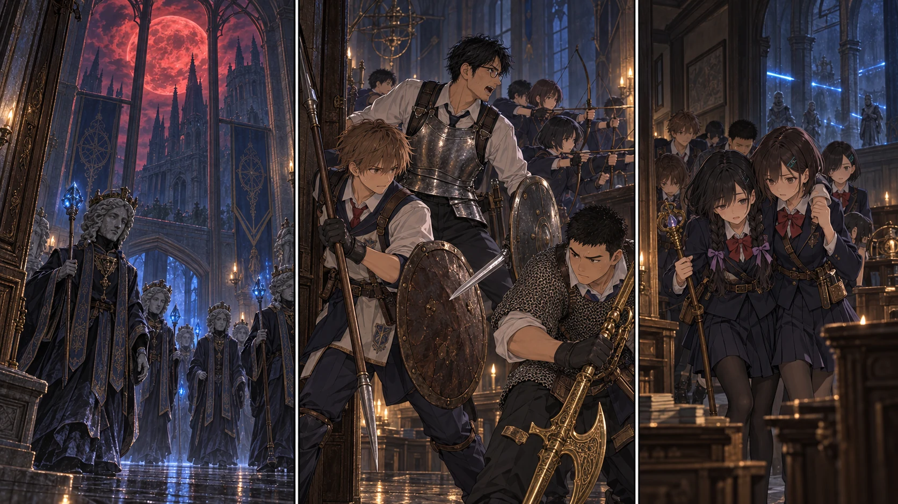

DAY50｜閉ざされた学院が、扉を開く夜。

【DAY50・昼｜見えても、渡らない】登録した学び舎へ十三人で戻り、討論室から中庭を確かめる。蟹のいる側へは寄らない。向こうの階段を大きな球が転がり落ち、石を削る音が足元まで響いた。先生は先読みの記述を閉じ、陸に周期を数えてもらう。一人で走り抜けることと、十三人を渡すことは違う。今日は脇の扉へつながる道と戻り方を記録した。騎士の先も、大書庫も、まだ踏み込んでいない。
【夕方｜戻れる場所を残す】日が落ちる前に、荷物と人の配置を決める。学び舎の祝福は十三人が使える帰路。討論室の光は未解放のまま残す。A隊は入口側、B隊は後方と負傷者の移動を担当した。教会の二十人は結衣のもとで見張りと調達を続ける。赤月だからといって、こちらの全員を一つの廊下へ集めるわけにはいかなかった。
【夜｜五度目の赤い月】高窓の向こうが赤くなった。雲の切れ間に現れた月は、以前より大きく見えた。皆がそれを見上げたとき、別の音がした。扉の閂が、外れる音。ひとつではない。廊下の両側で、閉じていた教室が順に開く。石の顔をした魔術師たちが列になり、その足元を人形兵が進んできた。
普段の場所を守るだけの動きではなかった。先頭が中庭へ、後続が出口側の通路へ向かう。入口の方へ兵を送るような、まとまった動きだった。「学院は外部との接触を絶っていたはずだろう……！」先生の口から、驚きが漏れた。手帳にあった世界と、目の前の世界がずれた。先読みには、この赤い月も、今夜開いた扉も書かれていない。
青い光が壁の端を削った。陽太が盾を寄せるのが僅かに遅れ、肩を打って片膝をつく。先生は手帳をしまった。「予想は捨てる。目の前の数を数えて！ A隊、扉の幅まで下がれ。B隊、教室へ続く道を！」陽太は後ろへ退き、自分の赤瓶を使う。健太がその場所を埋めた。ひとり傷ついたことで、全員の役目を止めはしなかった。
【A隊｜守る幅】先生と槍盾の前衛は、広い場所で囲まれる前に扉へ下がった。盾は魔術をいくらでも止める壁ではない。柱から柱へ、撃たれる時間を短くする。陽太が戻ると、今度は彼が交代の声を出した。昨日、交代を叫んで生き残ったから、その声を出すのをためらわなかった。
【B隊｜通す道】蓮が退路を確かめ、大地の黄金のハルバードが通路へ割り込む人形兵を打ち伏せた。花と千夏は味方の肩越しに無理に射らず、前衛が半身を引いた瞬間だけ狙う。悠と拓海も、知っている術を必要な相手へ絞った。目で追えたのは魔術師八、人形兵四まで。こちらが倒した四人と二体だけで、通路の奥が空になるはずもなかった。
【紬の視点】紬は最後の者が扉を通るまで見ていた。誰かが遅れたら声をかけようと、それだけを考えていた。だから自分の足が遅れたことに気づかなかった。壁で弾けた光が頬のすぐ横を走り、身体が柱へ当たる。息が止まった。皆を励ます声を出すはずなのに、声が出ない。
一歩戻ってきた葵が、紬の腕を取った。「今は、こっちに頼って」。紬は自分の瓶を飲み、浅く息を吸った。「……歩ける。でも、手、貸して」。それだけ言うと、葵の手に力が入った。先生が二人の後ろへ回り、盾を敵側へ向ける。紬は振り返らず、自分の足で次の扉を越えた。
【転送の前に】まだ祝福へ飛ぶことはできない。まず追撃を切る。扉と曲がり角を使い、二隊が交互に下がる。大地が下がったら陽太、陽太が下がったら先生。最後の敵影が見えなくなっても、すぐには安心しなかった。蓮が十三人を数え、追ってくる足音がないことを確かめる。学び舎で戦闘が終わったことを確認して、ようやく光へ触れた。
【23:10｜帰る人数】教会の見張りが駆けてきた。結衣は十三という報告を聞いてから、ようやく肩を落とした。残留組は近場の鹿二頭と水を確保し、足りない食事を買い足して待っていた。全員を合わせて三十三。陽太と紬の身体は回復し、休息で瓶と術も戻る。学院に残した敵まで消えたわけではなかった。
先生は手帳の「封鎖」の文字を消さなかった。その下へ、赤月の夜の観測を書き足した。紬は隣で、手を借りて戻った道を地図に引く。先読みが外れた夜にも、帰り道を作った者がいた。レナラはまだ倒していない。百日目まで、あと五十日。皆が眠ったあとも、赤い光は石壁の高いところに残っていた。
【判定記録｜事前条件固定・各一回】天候 5+1+0=6／昼の経路 6+3+3=12／基地 2+5+3=10／警戒 3+3+3=9／迎撃 5+3+3=11／脱出 2+4+3=9。陽太と紬は赤瓶各1、魔術師4＋人形兵2撃破、残敵を追わず戦闘解除後に帰還。自然1＋1はなく、二段階の凶運判定は発生せず。新死亡0。
保存されたダイス
| 判定 | 出目 | 補正 | 合計 |
|---|
| 天候 | 5 + 1 | 0 | 6 |
| 昼の経路 | 6 + 3 | 3 | 12 |
| 基地調達 | 2 + 5 | 3 | 10 |
| 警戒 | 3 + 3 | 3 | 9 |
| 迎撃 | 5 + 3 | 3 | 11 |
| 脱出 | 2 + 4 | 3 | 9 |
事前条件 / 出目記録 / 原作参照・卓ルール